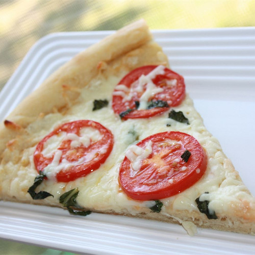

Four Cheese Margherita Pizza

This is a fantastic version of an Italian classic
Ingredients
-
2
Pizzas crust
- 1/4 cup olive oil
- 1 tablespoon minced garlic
- 1/2 teaspoon sea salt
- 8 Roma tomatoes, sliced
- 8 ounces shredded Mozzarella cheese
- 4 ounces shredded Fontina cheese
- 10 fresh basil leaves, washed, dried
- 1/2 cup freshly grated Parmesan cheese
- 1/2 cup crumbled feta cheese
Steps
-
Stir together olive oil, garlic, and salt; toss with tomatoes, and
allow to stand for 15 minutes. Preheat oven to 400 degrees F (200
degrees C).
-
Brush each pizza crust with some of the tomato marinade. Sprinkle the
pizzas evenly with Mozzarella and Fontina cheeses. Arrange tomatoes
overtop, then sprinkle with shredded basil, Parmesan, and feta cheese.
-
Bake in preheated oven until the cheese is bubbly and golden brown,
about 10 minutes.